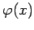

Inhalt Index DeskTop Bronstein

 Lineare Integralgleichungen Fredholmsche Integralgleichungen 2. Art Methode der sukzessiven Approximation, Neumannsche-Reihe
Lineare Integralgleichungen Fredholmsche Integralgleichungen 2. Art Methode der sukzessiven Approximation, Neumannsche-Reihe


Zur Ermittlung der Lösung  ist die Potenzreihe bezüglich 
die NEUMANNsche Reihe, auf Konvergenz zu untersuchen. Sind die Funktionen K(x,y) und f(x) beschränkt, d.h., es gelte
so bildet die Reihe
eine Majorante für die Potenzreihe (11.12). Diese geometrische Reihe konvergiert für
Die NEUMANNsche Reihe konvergiert also ebenfalls absolut und gleichmäßig für alle  , die (11.13c) erfüllen (s. auch Raum linearer stetiger Operatoren). Durch eine schärfere Abschätzung der Glieder der NEUMANNschen Reihe kann das Konvergenzintervall noch genauer angegeben werden. Danach konvergiert die NEUMANNsche Reihe für
, die (11.13c) erfüllen (s. auch Raum linearer stetiger Operatoren). Durch eine schärfere Abschätzung der Glieder der NEUMANNschen Reihe kann das Konvergenzintervall noch genauer angegeben werden. Danach konvergiert die NEUMANNsche Reihe für
Diese Einschränkung an den Parameter  bedeutet nicht, daß für größere Werte von
bedeutet nicht, daß für größere Werte von  generell keine Lösung existieren würde, sondern nur, daß die Lösung unter Umständen nicht durch die NEUMANNsche Reihe angegeben werden kann. Den Ausdruck
generell keine Lösung existieren würde, sondern nur, daß die Lösung unter Umständen nicht durch die NEUMANNsche Reihe angegeben werden kann. Den Ausdruck
bezeichnet man als Resolvente oder lösenden Kern der Integralgleichung. Die Resolvente ermöglicht eine Lösungsdarstellung durch
| Beispiel |
|
Für die inhomogene FREDHOLMsche Integralgleichung 2. Art erhält man |
Hinweis: Ist für ein konkretes  die Bedingung (11.13d) nicht erfüllt, so kann ein stetiger Kern in zwei stetige Kerne zerlegt werden durch , wobei K1(x,y) einen ausgearteten Kern darstellt und K2(x,y) so klein ist, daß (11.13d) für diesen Kern erfüllt ist. Auf diese Weise läßt sich für alle
die Bedingung (11.13d) nicht erfüllt, so kann ein stetiger Kern in zwei stetige Kerne zerlegt werden durch , wobei K1(x,y) einen ausgearteten Kern darstellt und K2(x,y) so klein ist, daß (11.13d) für diesen Kern erfüllt ist. Auf diese Weise läßt sich für alle  , die keine Eigenwerte sind, eine exakte Lösungsmethode herleiten.
, die keine Eigenwerte sind, eine exakte Lösungsmethode herleiten.